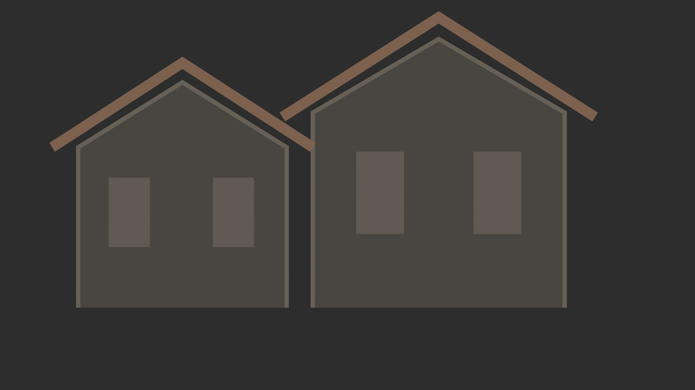
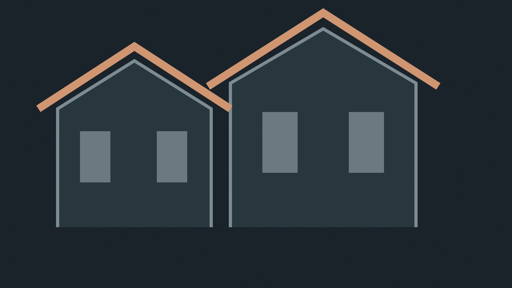
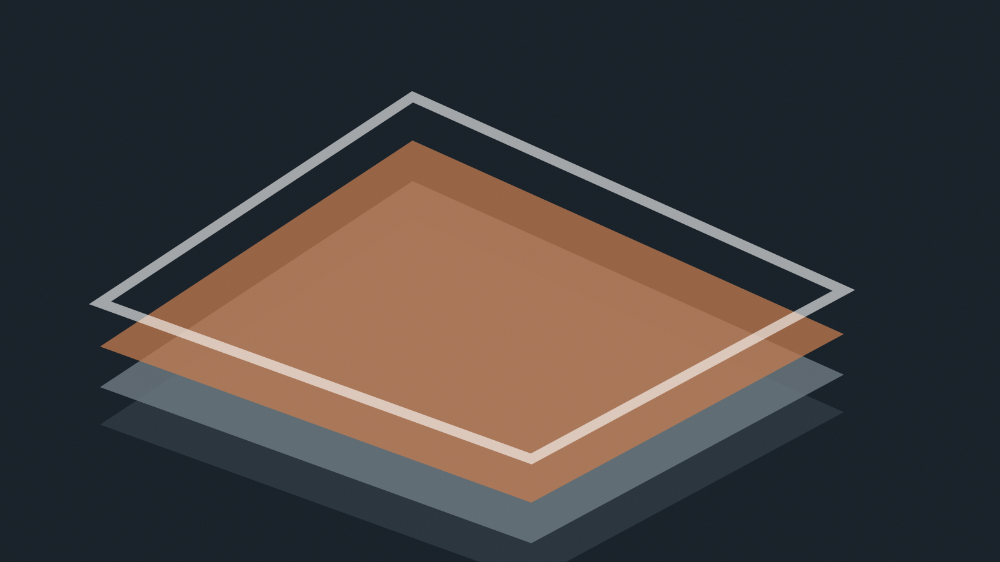

Kompletní střešní systémy · Praha
Střecha, která
respektuje dům.
Od historického krovu po moderní plochou střechu. Technicky přesné řešení, řemeslný detail a odpovědnost za celek.
Řemeslo × technika
Neprodáváme metr krytiny.
Řešíme celý střešní plášť.
Každá střecha má vlastní konstrukci, historii a provozní nároky. Proto začínáme prohlídkou, hledáme příčinu a navrhujeme řešení, které dává smysl jako celek.
Služby
Tři disciplíny.
Jeden technický standard.
Od detailu klempířského prvku po souvrství celé střechy — vždy s ohledem na životnost, servis a charakter budovy.
Vybrané veřejné reference
Praha má střechy,
které stojí za pozornost.
Názvy, roky a rozsah prací jsou převzaty z veřejného seznamu společnosti. Obrazové vizualizace jsou v demu redakční a čekají na firemní archiv.
Před / po
Rozdíl není jen nový povrch.
Správná rekonstrukce řeší konstrukci, spád, odvodnění, napojení a detaily. Posuňte jezdec a porovnejte modelový stav před zásahem a po dokončení.


Postup realizace
Čtyři kroky.
Žádné slepé místo.
Transparentní rozhodnutí před zahájením prací snižují změny, prodlevy a provozní riziko během realizace.
- 01
Prohlídka a diagnostika
Zaměření, fotografie, identifikace poruch a návazností.
- 02
Návrh řešení
Skladba, materiály, detaily, harmonogram a rozpočet.
- 03
Realizace
Řízení řemesel, kontrolní body a dokumentace průběhu.
- 04
Předání a servis
Kontrola detailů, doporučení údržby a jasná odpovědnost.

Materiály a detaily
Viditelný povrch je jen poslední vrstva.
Kvalita střechy vzniká v souhře parozábrany, tepelné izolace, hydroizolace, odvětrání, klempířských detailů a bezpečného odvodnění.
Kontakt
Začněme střechou,
která potřebuje rozhodnutí.
Pošlete základní informace. Projdeme je a navrhneme nejvhodnější další krok — prohlídku, konzultaci nebo orientační zadání.